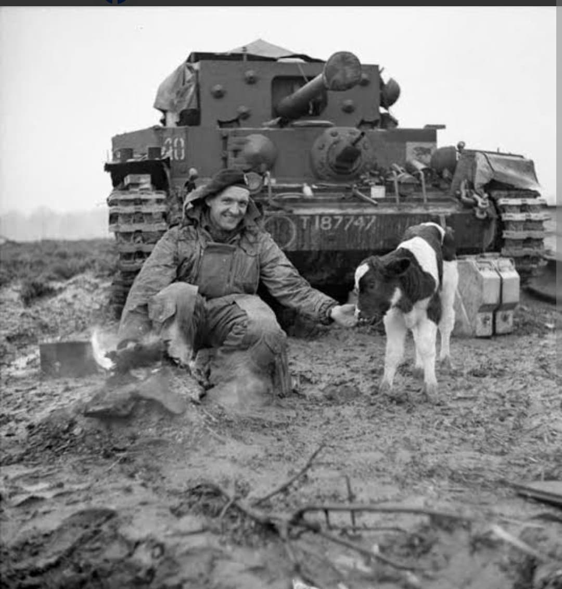
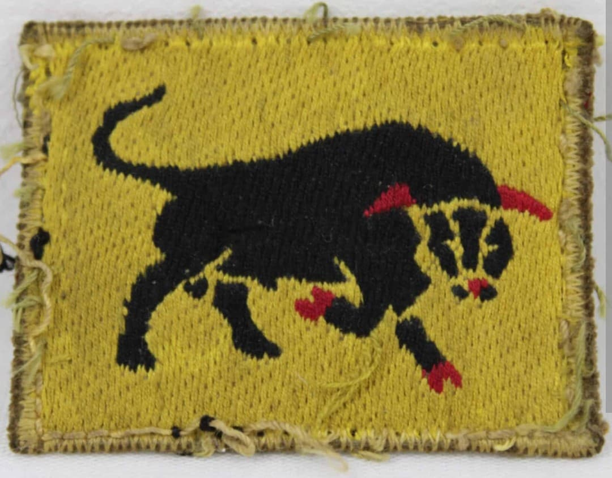
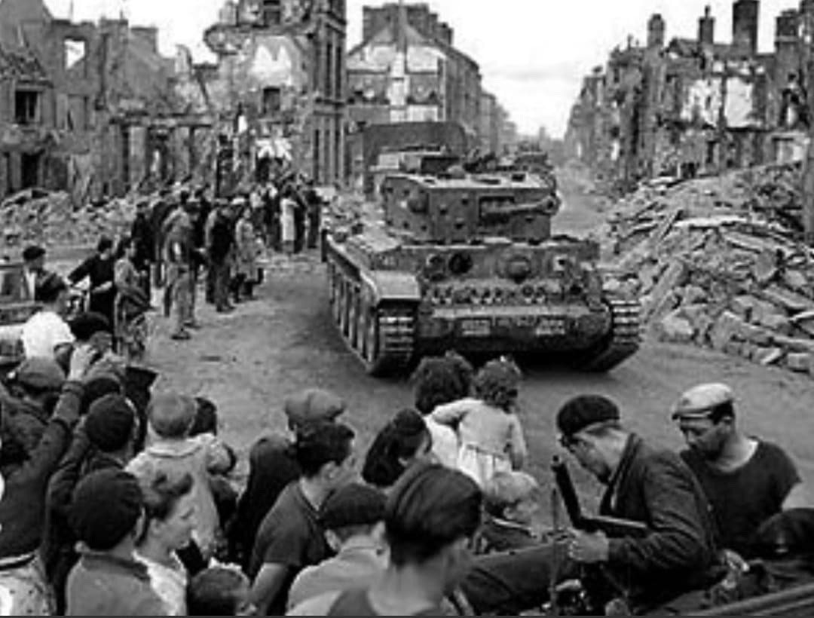

La division au Taureau Noir : du choc des blindés en Normandie à la traversée fulgurante de l'Europe du Nord-Ouest

La 11th Armoured Division (11e division blindée britannique), surnommée la « Black Bull » (Le Taureau Noir), est l'une des formations mécanisées les plus redoutables et efficaces de la British Army durant la campagne d'Europe du Nord-Ouest (1944-1945).
Formée spécifiquement pour le choc blindé et la poursuite rapide, elle a été engagée dans les plus impressionnantes batailles de chars de la campagne de Normandie avant de mener des avancées spectaculaires à travers la France, la Belgique, les Pays-Bas et l'Allemagne.
Activée en juillet 1941 sous le commandement du major général **Percy Hobart** (créateur des fameux chars spéciaux *Hobart's Funnies*), la division est ultérieurement menée au combat en Normandie par le major général **Philip Roberts**, l'un des plus jeunes et talentueux chefs blindés britanniques.
Son insigne d'épaule distinctif arbore un taureau noir au corps puissant, silhouette menaçante sur fond rectangle jaune, symbolisant la force brute, la ténacité et la charge irrésistible des unités blindées de la division.

Débarquée en Normandie à la mi-juin 1944, la 11th Armoured est immédiatement projetée dans l'**Opération Epsom**, perçant vers la rivière Odon au cours d'affrontements impitoyables contre les Panzerdivisions allemandes.
En juillet, elle constitue la pointe d'assaut de l'**Opération Goodwood**, la plus grande charge de blindés britanniques de la guerre au sud de Caen. Malgré des pertes sévères face aux batteries de 88 mm et aux chars Panther et Tiger ennemi, le « Black Bull » réussit à fixer et usurer l'essentiel des forces blindées ennemies, facilitant la percée alliée.

Après la fermeture de la poche de Falaise, la 11th Armoured entame une poursuite fulgurante. Début septembre 1944, elle réalise un raid blindé d'une rapidité légendaire, parcourant des centaines de kilomètres en quelques jours pour libérer **Anvers** et capturer ses installations portuaires intactes.
Au printemps 1945, la division franchit le Rhin lors de l'opération Plunder, pousse à travers la plaine d'Allemagne du Nord et atteint la mer Baltique à Lübeck en mai 1945, scellant la capitulation des forces allemandes dans le secteur.
Page du Musée HOP WW2 – Section Unités & Divisions